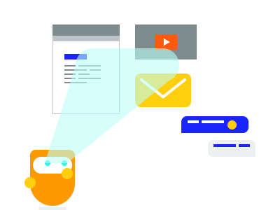
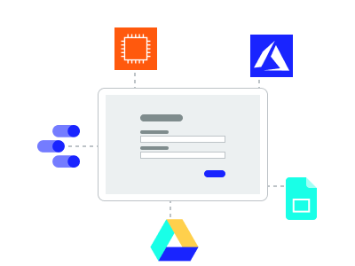

Lassio make automation and AI work for your business
We work with you to co-design, build and then manage automated business processes that are assisted by AI
Who we help
Business owners
You have a growing business area that needs more and more operational support to handle the growth in the service being offered. You are looking at lower cost geographies as a possible options to replace your local operational team to service the fast growing business area.
IT managers
You know the value of business process automation and AI, but you still need to build out a DevOps team with the skill set to build and manage services with it. Or you’ve invested in some automation services (RPA, testing software) but lack the time and ongoing funding to implement and manage the process automation long-term.
How we help
Lassio can help your organisation identify opportunities to get value from automation and AI. We don’t just sell you some exciting ideas and a strategy document. We work with you to co-design, build and then manage automated business processes that are assisted by AI.
Benefits
- Increase efficiency and reduce operating costs without having to spend money on your own internal capability
- Avoid the uncertainty and risk of off-shoring IT services
- Partner with Lassio—a 100% Australian-owned software and services team
- Build up an internal data source from which you can generate custom business intelligence insights
Your automation and AI journey
RPA at work

We free people up from manual administration and processing. This releases time and resources to focus on the things that are uniquely human.
- Creativity
- Customer care and empathy
- Problem solving, experimentation
- Social care
- Innovation
- Research and insights
Machines at work (outsourced tasks)

Outsource tasks to Australian based machines instead of offshore and international outsourcing.
- All data and systems on-shore
- Scale up or down easily
- Pay per task with no upfront costs
- Fully managed
People at work (assisted tasks)
There are many tasks that are best done by people assisted by technology.
- Low volume, not worth fully automating
- Keeping peope in control of decisoins or processing
- Complex, variable or empathetic business considerations
- Validation
Data at work

WSo much of what we can do better and differently is based on the data we can access an use. This gives us:
- Better decisions
- Sentiment (mental, physical and engagement indicators)
- Productivity and performance
- Machine learning, natural language processing
- Capture via digital forms